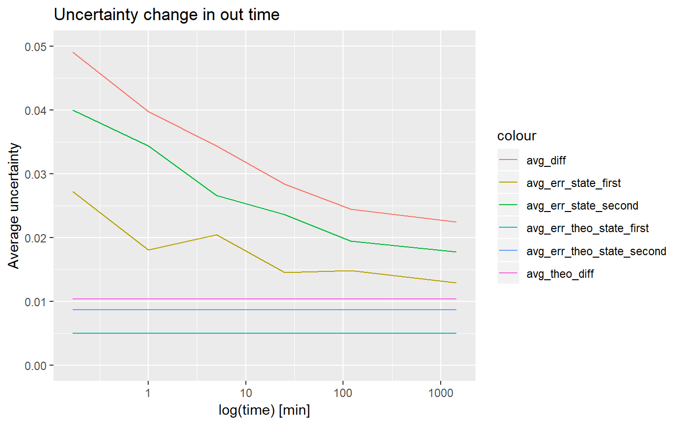

quality_control.RdChecks how the uncertainty changes in a function of `out_time`.
quality_control(dat, state_first, state_second, chosen_time, in_time, relative = TRUE)
| dat | data read by |
|---|---|
| state_first | state of the first peptide |
| state_second | state of the second peptide |
| chosen_time | chosen time point |
| in_time | `in` time |
| relative |
|
data.frame with mean uncertainty per different `out_time` value
The function calculates mean uncertainty of all peptides and its uncertainty (standard error) based on given `in_time` and `chosen_time` as a function of `out_time`. Both theoretical and experimental results for each state and their difference are supplied for comparison but only experimental calculations depends on `out_time` variable. The results are either in form of relative or absolute values depending on the `relative` parameter supplied by the user. This data can be useful for general overview of the experiment and analyse of the chosen time parameters.
# load example data dat <- read_hdx(system.file(package = "HaDeX", "HaDeX/data/KD_180110_CD160_HVEM.csv")) # calculate mean uncertainty (result <- quality_control(dat = dat, state_first = "CD160", state_second = "CD160_HVEM", chosen_time = 1, in_time = 0.001, relative = TRUE))#> out_time avg_err_state_first sd_err_state_first avg_err_state_second #> 1 5 0.002925674 0.002207625 0.003811229 #> 2 25 0.002086275 0.001636480 0.003375989 #> 3 120 0.002124354 0.001284390 0.002759393 #> 4 1440 0.001841383 0.001032972 0.002532581 #> sd_err_state_second avg_err_theo_state_first sd_err_theo_state_first #> 1 0.004561764 0.0007087017 0.0005185554 #> 2 0.003690424 0.0007087017 0.0005185554 #> 3 0.001976257 0.0007087017 0.0005185554 #> 4 0.001120593 0.0007087017 0.0005185554 #> avg_err_theo_state_second sd_err_theo_state_second avg_diff sd_diff #> 1 0.001236524 0.0005534176 0.004920756 0.004952401 #> 2 0.001236524 0.0005534176 0.004053767 0.003949308 #> 3 0.001236524 0.0005534176 0.003470818 0.002088545 #> 4 0.001236524 0.0005534176 0.003200211 0.001369362 #> avg_theo_diff sd_theo_diff #> 1 0.001476534 0.0006500359 #> 2 0.001476534 0.0006500359 #> 3 0.001476534 0.0006500359 #> 4 0.001476534 0.0006500359# load extra libraries library(ggplot2) library(tidyr) library(dplyr) # example of data visualization gather(result, 2:13, key = 'type', value = 'value') %>% filter(startsWith(type, "avg")) %>% ggplot(aes(x = factor(out_time), y = value, group = type)) + geom_line(aes(color = type)) + labs(x = "Out time", y = "Mean uncertainty")